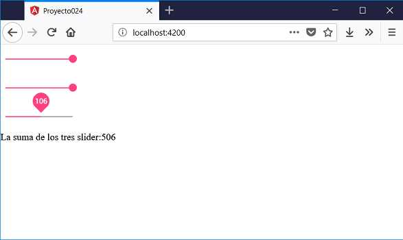

Veremos ahora la componente mat-slider que provee la misma funcionalidad de la etiqueta nativa de HTML <input type="range"> pero con las ventajas de estilos y animaciones de Material Design.
Definir tres controles mat-slider con valores que varíen entre 1 y 200. Mostrar la suma de los tres slider.
Crearemos primero el proyecto
ng new proyecto024
Procedemos a instalar todas las dependencias de Angular Material ayudados por Angular CLI mediante el comando 'add':
ng add @angular/material
Modificamos el archivo 'app.module.ts' donde debemos importar los módulos de Angular Material que requiere nuestro proyecto:
import { BrowserModule } from '@angular/platform-browser';
import { NgModule } from '@angular/core';
import { AppComponent } from './app.component';
import { BrowserAnimationsModule } from '@angular/platform-browser/animations';
import { FormsModule } from '@angular/forms';
import { MatSliderModule } from '@angular/material/slider';
@NgModule({
declarations: [
AppComponent
],
imports: [
BrowserModule,
BrowserAnimationsModule,
FormsModule,
MatSliderModule
],
providers: [],
bootstrap: [AppComponent]
})
export class AppModule { }
Como vemos aparece el nuevo módulo MatSliderModule.
Modificamos el archivo 'app.component.ts' :
import { Component } from '@angular/core';
@Component({
selector: 'app-root',
templateUrl: './app.component.html',
styleUrls: ['./app.component.css']
})
export class AppComponent {
slider1=0;
slider2=0;
slider3=0;
suma=0;
cambiar() {
this.suma = this.slider1 + this.slider2 + this.slider3;
}
}
Codificamos la interfaz visual en el archivo 'app.component.html':
<mat-slider [(ngModel)]="slider1" thumbLabel (change)="cambiar()" min="1" max="200"></mat-slider><br>
<mat-slider [(ngModel)]="slider2" thumbLabel (change)="cambiar()" min="1" max="200"></mat-slider><br>
<mat-slider [(ngModel)]="slider3" thumbLabel (change)="cambiar()" min="1" max="200"></mat-slider><br>
La suma de los tres slider:{{suma}}
Si ejecutamos ahora la aplicación podemos comprobar cual es la estética de la componente mat-slider:
Podemos probar esta aplicación en la web aquí.
En el archivo 'app.component.html' definimos los tres selectores 'mat-slider' :
<mat-slider [(ngModel)]="slider1" thumbLabel (change)="cambiar()" min="1" max="200"></mat-slider><br> <mat-slider [(ngModel)]="slider2" thumbLabel (change)="cambiar()" min="1" max="200"></mat-slider><br> <mat-slider [(ngModel)]="slider3" thumbLabel (change)="cambiar()" min="1" max="200"></mat-slider><br>
En el archivo 'app.module.ts' importamos todos los módulos necesarios:
import { FormsModule } from '@angular/forms';
import { MatSliderModule } from '@angular/material/slider';